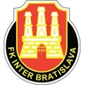

Najbližší zápasU9 A Prípravka
 FKM Stupavadomáci
FKM StupavadomáciVýkop o 11:30
 FK Senica U9 Ahostia
FK Senica U9 Ahostia
Návrh webu · nie je to oficiálna stránka klubu
Prípravka U9 ZsFZ
Najbližší zápasU9 A Prípravka
FKM StupavadomáciVýkop o 11:30
FK Senica U9 Ahostia
Prípravky hrajú bez výsledkov a bez tabuľky. Rozpis zápasov je nižšie.

FK Inter Bratislavavýkop 11:30Hráči, ktorí v kalendárnom roku 2026 nastúpili alebo boli v nominácii na zápas (podľa Sportnetu). Pri mládeži uvádzame len mená.